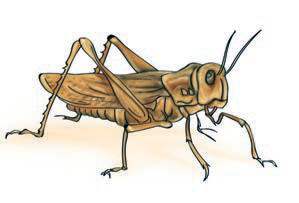
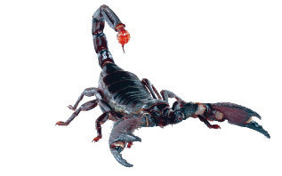
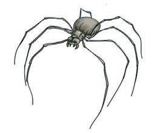
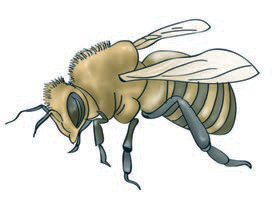
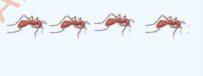

(a)

(b)

(c)
(d)

(e)

(f)

D.Andika majibu ya vitendawili hivi.
(i) Anajua kuchora ingawa hajui anachokichora. [[blank:item-1]]
(ii) Rafiki yangu ni mharibifu lakini ninamuhitaji. [[blank:item-2]]
(iii) Anabeba mishale kila anapokwenda. [[blank:item-3]]
(iv) Wazee wawili wanashuka mlima. [[blank:item-4]]
(v) Anafundisha kutengeneza mwavuli. [[blank:item-5]]